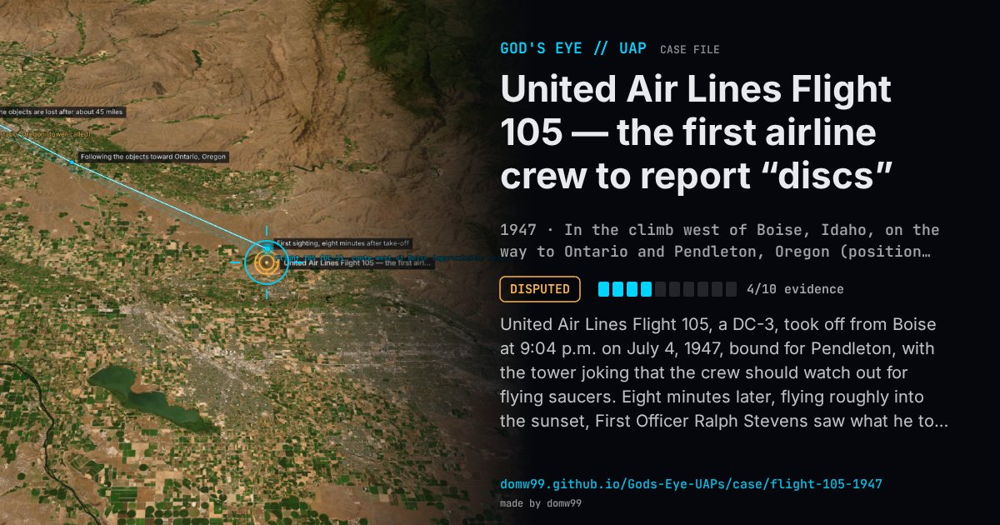

United Air Lines Flight 105 — the first airline crew to report “discs”

United Air Lines Flight 105, a DC-3, took off from Boise at 9:04 p.m. on July 4, 1947, bound for Pendleton, with the tower joking that the crew should watch out for flying saucers. Eight minutes later, flying roughly into the sunset, First Officer Ralph Stevens saw what he took for approaching aircraft and blinked the landing lights; he and Captain Emil Smith then made out four or five flat, circular objects in loose formation, one larger than the rest. They disappeared and four more took their place. The crew followed for 10 to 15 minutes, about 45 miles, called the stewardess forward to confirm it, and radioed the tower at Ontario, Oregon, and another United flight; neither saw anything. The next day the story ran nationwide: it was the first report of the 1947 wave from professional pilots, and the FBI later interviewed Smith together with Arnold.
Explanation
The Air Materiel Command concluded that “since the sighting occurred at sunset, when illusory effects are most likely, the objects could have been ordinary aircraft, balloons, birds, or pure illusion”, and the Air Force later pointed to the power of suggestion during the flying-disc craze ten days after Kenneth Arnold’s report. The crew always said they saw solid objects; no one else on the ground or in the air reported them.
What was seen
Shape: Four or five, then four more, flat round objects, “thin and smooth on the bottom and rough appearing on top”, in loose formation
Witnesses: Captain Emil J. Smith, First Officer Ralph Stevens and the flight attendant Marty Morrow
Duration: About 10 to 15 minutes, over some 45 miles
Sources
Browse
- United States
- 1940s
- Disputed
- Aviation encounters
- Official government documents
- Many independent witnesses
- Pilot and aircrew witnesses
- Spheres and orbs
- Formations and rows of lights